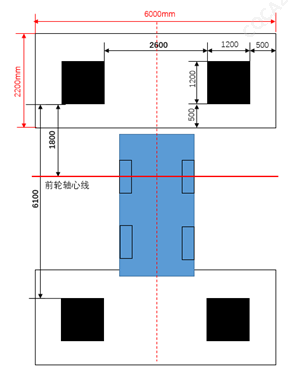

Ситуации, в которых требуется калибровка : 1. Замена и демонтаж камеры кругового обзора; 2. Неудовлетворительный эффект сшивания изображений; 3. Замена и демонтаж ответных деталей крепления камеры кругового обзора (передний бампер, дверь задка, левое/правое наружное зеркало заднего вида, левая/правая передняя дверь); 4. Замена контроллера автомобильной мультимедийной системы.
Инструменты: диагностический прибор (KT300/KT700, последняя версия программного обеспечения)
Требования к участку:
Среда для калибровки должна находиться в помещении с достаточным и равномерным освещением;
Размеры зоны калибровки должны быть более 9.5m*6m, поверхность пола должна быть ровной, все калибровочные блоки должны находиться в одной плоскости с полом, разница высот не должна превышать 1cm;
Расположите автомобиль по центру зоны калибровки, используя эмблемы Logo на передней и задней частях автомобиля в качестве промежуточных точек отсчета, проведите центральную ось AB;
Используя точки контакта передних колес с полом в качестве опорных точек, проведите ось передних колес CD;
Используя AB и CD в качестве ориентиров, расставьте калибровочные блоки в соответствии с требованиями к размерам на левом рисунке, обратите внимание, что базовой линией для измерения калибровочных блоков является черный край;
Края калибровочных блоков должны находиться на одном уровне с краями соседних калибровочных блоков;
После расстановки калибровочных блоков с помощью диагностического прибора переключите вид спереди/сзади/слева/справа (подробности см. в следующем разделе), понаблюдайте и убедитесь, что в каждом виде отчетливо видны четыре угла двух калибровочных блоков;
Во время калибровки запрещается перемещать автомобиль и калибровочные блоки.
